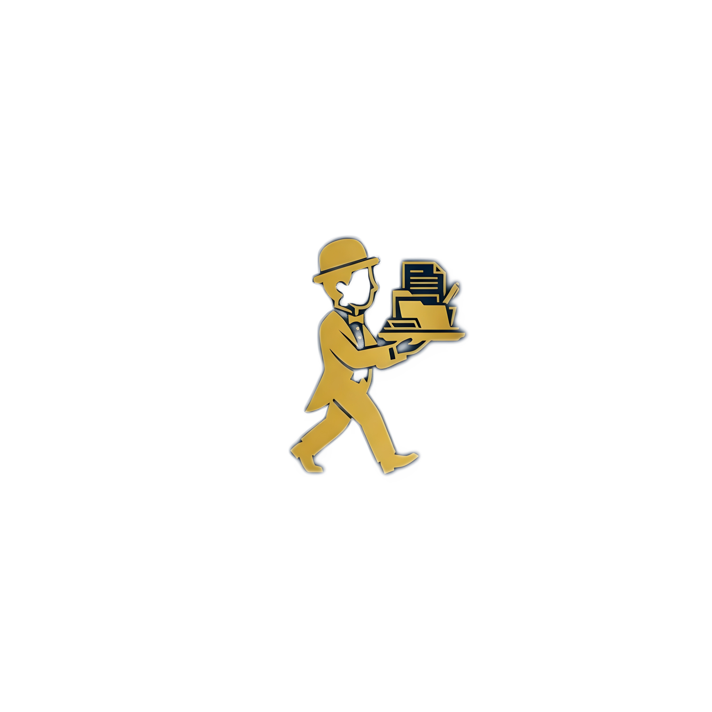

I'll handle the repetitive, tedious, and annoying digital tasks for you so you can spend your time on things that actually matter.
Any creative or professional project you just won't enjoy doing yourself.
Examples:
So long as it's legal, ethical, reasonably simple, and can be done remotely, just send it to me. And I'll tell you immediately whether I can handle it or not.
Hi! My name is Bright Borngreat (Yes, it's my actual government name; blame my mom for that, not me). I'm 18 years old, and I recently finished high school.
But instead of rushing straight into college or getting a slave-wage job, I'm currently taking some time to figure out what comes next.
My essentials like food and shelter are covered by my mom (for now), but I need to cover my own internet and day-to-day expenses.
So rather than go around begging for money, I figured I'd make myself useful instead.
I basically live on my phone, and as a result I've picked up a few relevant digital skills, tactics, shortcuts, and knowledge. Therefore I figured it wouldn't hurt to offer those skills to people who need them, in order to pay for my internet addiction and petty costs.
So here's my simple offer:
If you've got something tedious sitting on your to-do list, I'll use the digital acumen I’ᵍarrnered over the last few years to do it for you.
You get the annoying task off your plate and free up time to do more fun stuff with your days.
And in return, I get paid a few pennies for the work.
It's a win-win for everyone!
Enough yapping on this page. Click that button, and let's meet each other on the other side.
I Have A Job For You